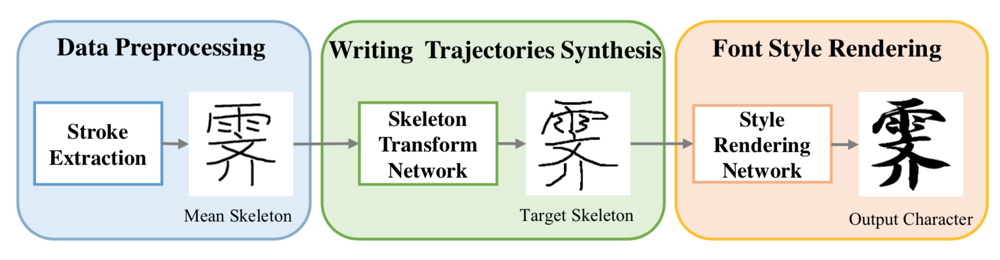
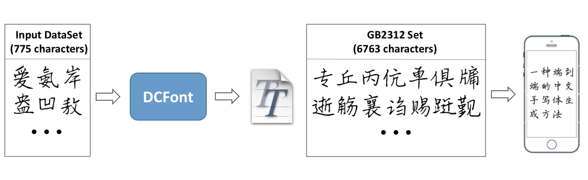

Yue JiangM.S. Candidate
Institute of Computer Science and Technology Email: yue.jiang [at] pku.edu.cn |
Yue Jiang is a 3rd-year graduate student at Peking University, advised by Professor Zhouhui Lian. Before that, she received a Bachelor degree from Dept. Computer Science and Technology at Nanjing Normal University. She is now a member of Character Shape Computing Lab (CSCL) at PKU, and her research interests include Computer Vision, Computer Graphics and Deep Learning.
|  |
Yue Jiang, Zhouhui Lian, Yingmin Tang, Jianguo Xiao |
|  |
Yue Jiang, Zhouhui Lian, Yingmin Tang, Jianguo Xiao |